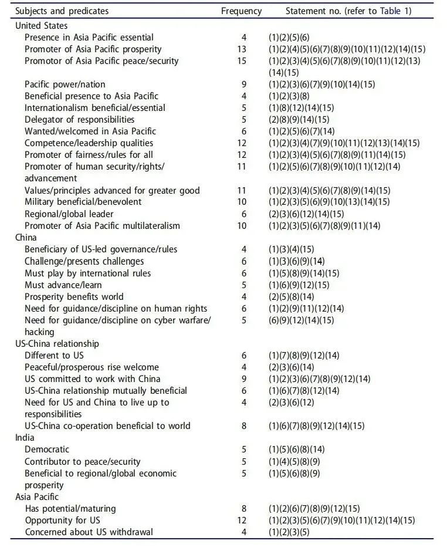
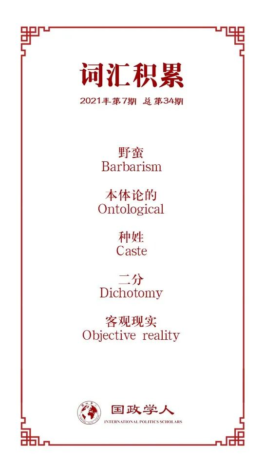

收录于合集
作品简介
【作者】 Oliver Turner，爱丁堡大学国际关系高级讲师（副教授）。主要研究兴趣是亚洲的国际事务，中美关系动态，英国在亚洲的参与，以及中国和印度等国家的 “崛起”。
【编译】 朱忻博（国政学人编译员，爱丁堡大学国际关系硕士）
【校对】 唐一鸣 朱家羲
【审核】 阮镇炜
【排版】 韩柯
【美编】 杜丛竹 ****
【来源】 Turner, O. (2016). China, India and the US Rebalance to the Asia Pacific: The Geopolitics of Rising Identities. Geopolitics , 21(4), 922–944.
【归档】 《国际关系前沿》2021年第7期，总第34期
期刊简介
《地缘政治》（ Geopolitics ）是一个致力于当代地缘政治研究的国际性多学科期刊，为学者们提供了一个学术分析的舞台。该期刊从多学科的视角解决地理和全球政治的交叉，主要关注州际关系、大国关系、区域一体化、能源与资源、贸易路线和国家边界等问题领域。2019年该期刊影响因子为2.65。
中国、印度和美国亚太再平衡：
**崛起身份的地缘政治
**
China, India and the US Rebalance to the Asia Pacific: The Geopolitics of Rising Identities
Oliver Turner
内容提要
美国对亚太的再平衡一直被诠释为对中国物质力量崛起的回应。虽然不完全错误，但这个假定出于对国家相对能力的解释力的过分信仰，其并不能解释为什么其他快速崛起的国家，尤其是印度，在美国的地区安全话语中缺席，也不能解释为什么早在上世纪七十年代中国崛起之前美国就已在亚洲保持强大存在。什么是“再平衡”？“再平衡”是如何（how）出现的？它为什么（why）会出现？在中国崛起的背景下其旨在实现什么？为了解决这些问题，并给出一个更好的解释，本文借鉴了批判地缘政治学和后殖民理论进行分析。本文认为，“再平衡”最好被理解为是对历史话语的（再）表达，它构建了某些外国他者（foreign Others），如中国，作为对本体的美国自我（American self）的挑战，这使得“再平衡”既面向一个崛起的国家行为体，又面向一个特定的崛起的身份。本文分析在某种程度上出于对“当前形式的再平衡是如何实现的？”这个问题的关注。从这里出发，文章指出了国际关系理论一个日益增长的退步趋势，即否认研究“如何可能”（how possible）的解释价值，鼓励它们的边缘化，以有利于研究“为什么”（why）政治决策被做出。
文章导读
01
引言
从2011年开始推进的亚太再平衡是美国长期外交战略中重要的一环，也是在全球权力前所未有的从西方转向东方时美国维护其“霸权之光”（“hegemony light”）的努力。虽然“再平衡”是复杂而广泛的，但自上世纪70年代末以来中国迅速崛起的影响如此之大，以至于其比其他任何一个国家都更能成为美国决定“重返”亚洲的核心考虑。在相关的国际关系文献中，这通常是焦点所在，“再平衡”一贯被解释为主要是对中国崛起的回应。相关分析也通常按照现实主义国家(经济和军事)属性所构成的权力的概念框架进行，其逻辑是，当新的竞争对手崛起时，主导国的反应是捍卫自己的地位。
但一个关键问题是，美国人及其政策制定者并不害怕每个大国相对于美国的崛起，也不会以同样的方式做出反应。比如，印度也是快速崛起，但在美国的安全话语中并不存在“印度威胁”。第二个问题是，为了证明“再平衡”是对中国崛起的回应，它的起源必须追溯到对中国物质增长的担忧。但早在中国崛起之前美国就在亚太保持了强大存在，1989年苏联“威胁”的消失也没有促使美国大规模撤出亚洲。这些问题表明驱动和支持“再平衡”的力量更复杂且更不容易分析。
本文的第一个目的是解决这些相互关联的问题，使人们能够更好地了解“再平衡”是什么，它是如何和为什么发生的，以及它是为实现什么而设计，特别是在备受讨论的中国崛起背景下。基于这第一个目的，该分析在某种程度上是由“如何可能”（how possible）而不是传统的“为什么”（why）问题指导的。“为什么”问题寻求在假定和给定的社会现实中解释决策和政策被制定的原因。现有的关于“再平衡”的国关文献主要以这种形式的问题为指导。美国行为的客观性，同所有的国际行为体一样，被认为是理所当然的，即被认为是在回应一个新兴强大的中国带来的挑战。虽然这种分析模式并非没有价值，但它并未解决上述问题。“如何”（how）问题能够将“客观”现实问题化（problematise “objective” realities），从而暴露“为什么”问题所忽视的权力的形式。其关注重点是话语力量和物质力量的构成功能（constitutive function），以及对世界及其主体性的知识和真理的索求。因此，它们更有能力解释那些通过“为什么”框架看起来有问题甚至是矛盾的政治实践，如：旨在中心化并规训崛起的中国，同时拥抱崛起的印度的“再平衡”，为何可以显得是合乎逻辑甚至必要的。本文的次要目的是通过解决概念上使“如何”与“为什么”问题脱节的无益倾向，为国关理论做出贡献。
02
“再平衡”的谱系：地缘政治、后殖民主义和身份政治
很多学者认为美国的亚太再平衡是对中国崛起的回应，不过本文认为该地区的国际关系行为体并非是不证自明或不能被问题化的，它们的现实关系（如威胁、仁慈、合作等）是由主观定义、由社会和想像建构的。为了理解“自我”（self），一些人和地方被“他者化”（othered）了，由于历史上中国曾以不文明、理想化和落后的形式存在，美国则从一个更“文明”“开化”“科技化”的有利地位出发（来建构其“自我”和“他者”）。
纵观美国历史，美国的扩张主义与其说是一种政策，不如说是一种存在模式。由于美国不是由一个特定的种族或宗教，而是由世界各地不同群体构成的国家，美国可以说在特定的程度上总是被迫将自己与一套理念和价值观绑定，如民主和自由，因为这些价值是普世的。正因为不清楚什么是美国，所以美国人很担心“非美国”事物的威胁。因此，美国生来就是一个“救世主国家”，有一种与生俱来的责任，就是为了全球利益而输出自己的身份认同。
美国初期对待美洲原住民的政策就体现了这点。扩张和夺取资源的愿望当然是一个激励因素，但美国并没有入侵它对其拥有优势的每一个国家，如加拿大。而美洲原住民对美国的生存并不构成可信的威胁，但他们作为美洲原住民的存在，以及他们被定义的基本无可争议的思想（野蛮的），挑战了美国身份认同的核心信条。此外，他们不是开化的美国自我的被动建构者，两者是共同构成的，随着后者在整个大陆的推进，“未开化”的前者积极地(重新)肯定了更“开化”的后者。后来美国向太平洋的进军也同样如此，其对潜在的物质收益用独特的话语（如“文明”对“野蛮”）来诠释。例如，对菲律宾的占领被解释为给“不文明的”菲律宾人带去文明。
由于根据对“自我”的理解，人和地方是被“他者化”的，身份认同不能如实证主义者和一些建构主义者所指出的那样，被本质化到它可识别的“存在”的程度。话语的流动性使得美国可以随着时间的推移将自我重新定义为“白人”“开化”“反共”等（的组合），他者作为“非白人”“外来的”“共产主义”等的意义也会相应演变。冷战时期，当美国第一次将自己嵌入东亚时，它所回应的他者以与过去不同的方式挑战了美国自我，“威胁”也相应地被制造了出来。美国官员认为苏联不太可能发动袭击，因此其首要危险并不在于苏联军队。很大程度上苏联的威胁在于它是一个共产主义国家，是对美国自我宣称的“自由世界”领导的挑战。20世纪70年代，越南共产党的胜利并没有对美国的安全造成重大的不利影响，但美国耗费了1700亿美元和近5万名士兵的生命来试图打败它。话语权力仪式的产生、形成、获得重要性和对当代政治的影响来自于这样一个“事实”：越南作为“自由的前沿”，是美国权力的关键场所。
话语权力的仪式至今仍在运作，这不是从美国在该地区实际建立自身地位时的一系列现实政治事件开始，而是源于对外国他者的知识建构和美国自我的本体论安全寻求实践。这些做法的中心还是（主观定义的）民主、自由的价值观，以及把它们安全化以确保国家的生存。
03
重新审视“再平衡”
关于美国亚太再平衡的现有文献都受限于对“为什么”（why）的共同理解：由于中国物质力量的崛起及其能力带来的挑战，美国正在对亚洲进行再平衡（至少在一定程度上如此）。然而，美国人并不害怕每一个重要国家行为体的崛起，也不会以相同的方式做出反应，而且美国在该地区的存在早于中国的快速崛起。理解“如何可能”（how possible）可以解决这些问题，通过分析到目前为止美国自我检查的话语和表征过程（或仪式）可以解释传统范式难以处理的政策。在这一过程中，今天的“再平衡”的话语逻辑可以追溯到当代中国崛起之外的美国历史、发展历程和身份认同。

表1，美国政府再平衡声明中的主语及谓语，2011-2015
为了进行分析，本文收集了从2011年10月至2015年4月之间美国政府关于“再平衡”的15个最完整的表述，并从这些政府声明中，生成了属于美国、中国、印度和亚太地区的重复性谓语列表。如上表所示，美国政府的“再平衡”话语一惯地（15份声明中每个都有）将美国建构为和平与安全的推动者，有13份声明称美国的安全存在有利于地区繁荣。本文的目的不是质疑这些说法的有效性（美国在许多方面促进了地区的安全和繁荣），而是为了表明这些“真理”不是客观现实，它们是为美国及其在该地区的实践服务的、受话语操纵的现实的产物和贡献者，特别是在中国崛起的背景下。例如，克林顿声称，“由于我们独特的地理位置，美国既是大西洋强国，又是太平洋强国”。然而，在这方面美国的地理位置并没有什么独特之处，加拿大、墨西哥、哥伦比亚等其他国家也同时与两大洋接壤。这本质上是一种行动呼吁，通过确保美国在遥远的亚洲能像越南、菲律宾，以及最重要的中国一样自然地采取行动，从而把国外事务变成国内事务。
这说明中美(或其他任何国家)之间的主体定位不仅仅是，或甚至不主要是在相对实力的水平上进行的。学者们将中国崛起视为美国地区政策背后的关键推动力量，这是正确的。但是，中国崛起所带来的富有想象力的地缘环境对美国自我（self）有一定意义，而印度(在这些声明中出现频率第二高的国家)则不然。每一种关系都是由强大的预想（presupposition）来定义的，正如美洲原住民既是欧洲- 美国身份认同的首要建构又是其主张的重要部分，中国这个“他者”使幻想的美国“自我”在亚洲的出现变得必要。
“再平衡”的声明并没有掩盖当代亚太地区及其行为体的地缘分布，其一直被置于美中“差异”的背景下。虽然美中存在本体论上的差异，但考虑到冷战时期美国一直声称要保护威权的台湾的“自由”，所以真正重要的不是中国是共产主义国家，而是其认为中国共产主义挑战了美国的反共“自我”。将印度视为对更具物质实力的中国的战略制衡，这并不一定是错误的，但也是不完整的。美国认为印美紧密联系建立在共同的价值观和利益基础上，在其想象中，印度的崛起与中国相比不仅没有那么引人注目，在分量上也有所不同。一些学者认为再平衡是由对北京透明度的需求，中国军力带来的挑战，以及中国遵守国际规则的需要构成的。然而那些规则并不是简单地在这里去被遵守，在某种意义上，它们甚至不存在，至少是以假定的形式存在。有6份声明提到人权方面中国需要纪律或指导。但是，没有一个国家能够完全充分地维护人权，如四分之一的印度人口被指定为表列种姓或表列部落，这些人遭受虐待和歧视，此外印度也是世界上童工人数最多的国家。
以这种方式将世界的空间化延续了“一方面是核心国家和权威中心，另一方面是反叛边缘和不同政见文化之间的斗争”。当中国被特别提出，成为美国帮助建立并努力维持的开放和基于规则的体系的受益者时，行为责任就落在了北京身上；反之，反叛这一体系的表现就被判定为现代话语体系中的修正主义者，就有受到规训的风险。因此，美国担心中国是否遵守国际规则，尽管这些规则都是由想像建构的，是否有意义、是否遵守，都是根据预想和主体定位来判断，而非法律法规，在很大程度上，它们产生于本体论差异。
美国在亚太地区的参与及其国际主义，与其说代表着一种政治选择，不如说是一种存在模式。通过加强其在这个有潜力、正在成熟，但需要“不可或缺的”美国支持的地区的存在，在诸多方面，“再平衡”代表了现代“美国”的证明。虽然现在很少谈论“文明”与“野蛮”之间的对立，但这种内部/外部的全球二元性在美国自封为名义首脑的国际共同体——一个空想机构中——得到了体现。文明仍然需要野蛮来明确“自我”，一个缺乏完全文明标准的中国形象持续弥漫在美国政治中。而崛起的印度，凭借其作为美国主导的国际共同体中的一个“领导者”的本体论地位，肯定了美国享有卓越军事地位的权利。
这就是当前形式的“再平衡”如何在逻辑上成为可能。尽管中国与美国有着广泛的合作关系，但中国作为美国的战略“他者”而存在，这是一个无法摆脱的话语结构。美国在其“再平衡”中的差异化的表现，不仅仅是因为中国物质实力崛起的作用。熟悉的美国“自我”仪式确立了这样一个“事实”，即中国代表着美国的本体论对手，其价值观先于中国当代的崛起，并独立于中国。如同美洲原住民、菲律宾反抗者、冷战时的苏联等，今天的中国作为“中国”这个存在，既挑战又重申了美国在亚太地区的“自我”及其高度价值驱动的安全观。
04
关于“如何”和“为什么”：从崛起的大国到崛起的身份
如今，美国政府关于“再平衡”的声明有助于揭示美国如何在逻辑上区分物质增长和社会建构的“他者”的现代化。更重要的是，它的身份认同轮廓和被理解为挑战或肯定美国“自我”的“他者”的文本机制告诉我们，为什么崛起的“他者”会在“逻辑上”被不同地对待，以及为什么相应的战略决策被做出。美国目前正在亚太地区进行再平衡，部分原因出于它是一个“地缘独特的”、“仁慈的”“太平洋大国”，拥有在该地区称霸的想象权利。与此同时，中国从它所处的（美国领导的）国际共同体边缘的位置上“威胁着和平与安全”。这些主观而非不言自明的“事实”推动美国采取行动。这说明“再平衡”遏制和安抚的既是中国的“崛起”，又是“中国的”崛起，这不可避免地指向了追求“如何”和“为什么”的共同含义。
美国在亚太的再平衡一直被认为是对中国物质力量崛起的回应。这种解释强调相对物质力量变化的重要性，虽然没有错，但无法解释为什么美国人不害怕所有国家的相对崛起，也无法解释为什么在中国崛起之前美国就在该地区保持强大存在。本文分析表明，再平衡不是一个孤立的战略，由对一个不证自明的世界的当代评估驱动，而应被认为是一种长期以来产生了世界现实及其内部行为体的强大的地缘政治话语的(重新)表达。
四年来，美国政府关于“再平衡”的声明显示，中国对美国的自我（self）所展现出的不是简单的物质实力的数量问题，而是明显的性质问题。迅速崛起的印度再次证明了美国的身份认同与其地区安全行为的关系。就像美国在北美的殖民统治以及与外国他者（Others）交往的历史经历一样，美国参与亚太事务并非纯粹出于物质利益。物质是重要的，但“再平衡”产生于通常毫无疑问的话语条件，这些条件要求“再平衡”的设计不是为了遏制或绥靖一个崛起的大国本身，而是一个本体论意义上的崛起身份（ontologically significant rising identity）。
约翰·米尔斯海默认为，“权力是国际政治的货币。大国……时刻关注他们彼此之间有多大的经济和军事权力”。但就像货币一样，物质力量的价值并不是由其性质决定的。它是想象的，甚至是虚幻的，它的重要性通过社会互动而被赋予或否定。即使在米尔斯海默所说的“大国”的情况下，时刻关注的也不只是经济和军事力量，还有话语构成的主体性的自身和他者。因此，在一个新兴大国崛起和美国衰落的时代，必须考虑从“崛起大国”转向“崛起身份”。上文所述并不是要忽视相对物质实力变化的重要性，然而，它将为渗透和定义物质实力的各种形式的权力创造空间，塑造它们变化的现实。随着话语、身份和表征等观念性力量越来越多地被融入到对世界事务的主流分析中，它们在关于所谓崛起大国的理论辩论中仍然相对边缘化，这似乎很奇怪。解决这一问题将是朝着“更充分地理解”当代全球问题迈出的第一步。
译者评述
不同于诸多分析权力转移与中美关系的文章，本文采用了后实证主义的视角，不只关注于物质力量在美国亚太再平衡中的作用，还关注了观念性力量，如话语、身份认同等对美国战略制定的影响。其从美国亚太再平衡政策中对同样是崛起大国的中国和印度采取了截然不同的态度出发，通过对美国政府15份关于“再平衡”的声明进行话语分析，指出了观念性因素在其中起的重要作用。作者文中指出扩张主义是美国自建国以来一直保有着一种存在模式。由于其国家并非由单一的种族或宗教组成，美国不得不将自己与一套普世价值观绑定（如民主自由），来建构“美国”的身份认同。但美国的认同都是普世的，不是独一无二“美国的”，正是因为不知道什么是真正“美国的”，所以美国才担心一些“非美国”（或说与美国坚持的普世价值相违背）的东西会损害美国的身份认同。这就在美国促成了一个话语建构的“自我”与“他者”的对立，美国需要持续不断地建构一个又一个“他者”，以（重新）肯定美国的“自我”。这是一个动态的过程，从美洲原住民，到亚洲的被殖民国家，到冷战时期的苏联等等，美国通过话语不断塑造了这些“野蛮的”“非白人的”“外来的”“共产主义的”他者，以及与之相对的“文明的”“白人的”“开化的”“反共的”美国自我。今天，在美国的安全话语叙事中，中国则扮演了与美国“自我”对应的“他者”角色。
虽说这篇论文发表于2016年奥巴马执政时期，当时情况与现在颇有不同，中美关系也较今日为好，但文中对美国“如何”做出战略决策的分析并不过时。尽管印度与中国类似，也相对于美国快速崛起，但美国在制定战略时对印度采取了与中国截然不同的态度，其安全叙事中竟出乎意料的完全忽视了印度可能的威胁。如果仅从物质权力和利益的计算来看，这似乎有些不合常理，但加上观念性力量（如身份认同）的分析便可以较好地解释。美国将自身视为想象中的“自由”国际社会的领导者，在其话语体系中印度是该国际社会中的一员，因此美国认为印美有着共同的价值观和利益（尽管印度存在人权问题），印度并不会对美国的“自我”认同产生威胁。相反，中国则处在美国领导的虚幻的国际社会的边缘位置，拥有着与美国不同的价值观，尤其是随着中国的崛起并持续在世界扩大影响力，美国感到其“自我”受到了严重的挑战。据此，美国在亚太再平衡乃至后来的印太战略中对中国崛起的明显针对，而对印度崛起的忽视便可以更好地被解释了。此外，需要明确的是本文后结构主义式的话语和认同分析并不否认物质力量的重要性，作者想要呼吁国关学界在分析权力转移时，增加对观念性力量的关注，既要回答“问什么”问题，也要回答“如何”问题。实证主义者认为理所当然的客观现实在某些情况下可能并不那么“客观实在”，而是受到主观建构影响，本文研究的美国外交政策的制定便是一个很好的例子。当然，国关领域对于权力转移和中美关系的研究众多，本文所述只是诸多观点和方法中的一种，不过这种来自后实证主义的分析尚属少见，其有助于促进国关研究方法的多元化，并更全面地看待中美关系。
词汇整理

文章观点不代表本平台观点，本平台评译分享的文章均出于专业学习之用, 不以任何盈利为目的，内容主要呈现对原文的介绍，原文内容请通过各高校购买的数据库自行下载。
好好学习，天天“在看”
国政学人
支持学术公益与知识传播
微信扫一扫赞赏作者 __赞赏
已喜欢，对作者说句悄悄话
取消 __
发送给作者
发送
最多40字，当前共字
上一页 1/3 下一页
长按二维码向我转账
支持学术公益与知识传播
受苹果公司新规定影响，微信 iOS 版的赞赏功能被关闭，可通过二维码转账支持公众号。